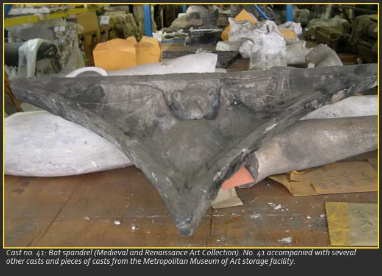
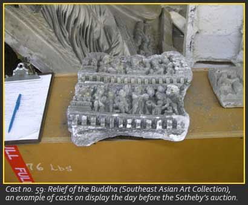
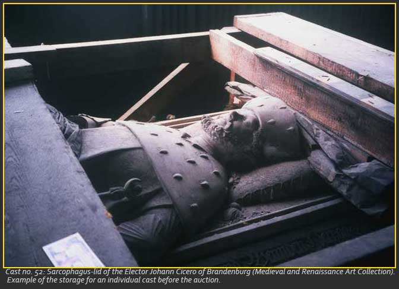

Part I: The Viewing

We arrived in the Bronx late in the afternoon of February 27, 2006, our destination being an old warehouse overlooking the East River, where the Metropolitan Museum of Art had stored their plaster cast collection. Most of the casts were made over a century ago, some never even reaching display status before the museum began replacing them with acquisitions of original sculptures. They were going to be auctioned off the next day at Sotheby's, and we were two women on a mission: hoping to attain more historic plaster casts to add to the collection of George Mason University and to inspire future students.We had learned of the auction in a January 2006 article in The New York Times. We were delighted with the gift of plaster casts that the Metropolitan Museum had made to GMU, and though we agreed that the casts are reproductions, we knew that skilled craftsmen had made them, and that these are often exact copies of works of art (with the exception of pieces that were restored prior to casting, such as nos. 2 - 5). And nobody can dispute the fact that these casts are historic, most of them having been made during the 1890s. More fuel to add to our fire: in February an article on Bloomberg.com suggested that these casts could help with "a Tribeca loft in need of some decoration, (to) add some instant class, quite possibly on the cheap." Would the Tribeca lofties bother to research the casts beyond Google? The trip was time and money well spent, if we could rescue even one cast for public display, instead of letting it be hidden away in someone's apartment! As students, we recognized that this was a unique opportunity for us to experience the sale of a collection at a major New York auction house, yet we readily acknowledged that we knew nothing about the procedure that was about to unfold. We were ready to take action, our professor had supported the idea, and accommodations were offered by family members on Long Island.

Descriptions of the ninth floor of the Bronx warehouse had not prepared us for the sight. In the dim light, shadowy images of disembodied human figures and small ruined buildings came into view. Everywhere, dusty soot-covered plaster statues, portrait-heads, body parts, reliefs, architectural models, and decorative fragments filled rows of shelves and floor space. The time periods they covered ranged from Greek and Roman to Medieval, Gothic, Byzantine, Italian Renaissance, Northern European Renaissance, Baroque, Near Eastern, Far Eastern, and Egyptian. All the casts were in various states of disrepair from almost a century of neglect. They were haphazardly grouped together in lots based upon where they were sitting on the shelves and floor, so as to prevent more damage prior to the auction.Wandering through the aisles, we were excited by many of the pieces, but our confidence was waning for any chance of a successful bid the next day. We surveyed the lots, and kept an eye on the competition. Although the casts were invaluable to us, we wondered if our budget could withstand any of the other prospective bidders. As we entered the warehouse, some distinguished-looking men in fine Italian suits exited, slipping into sleek black chauffeured vehicles. Inside, women in full-length minks darted around us, occasionally peering at us over their glasses, likely curious as to why these two jean-clad young women were shrieking with delight at every other cast. The word in the warehouse was that all week long the majority of surveyors had been antique dealers, art dealers, interior decorators, and museum representatives. Nonetheless, we were determined to make at least one successful bid at Sotheby's, our purpose being the promotion and preservation of history and art at George Mason University.
